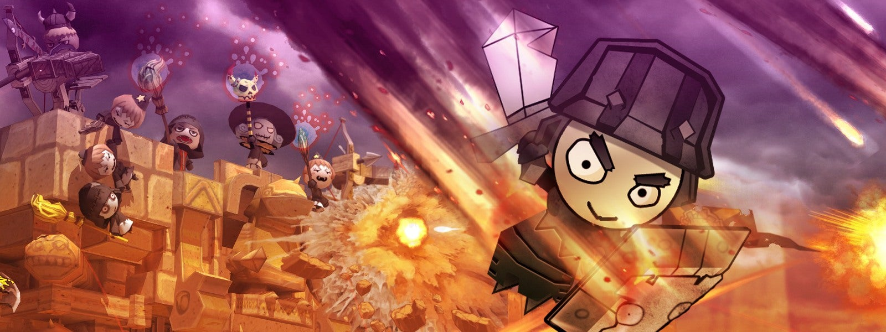
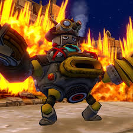
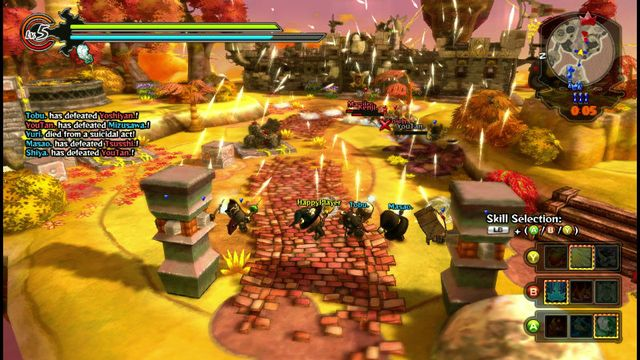

The game I would love to play during my free time is play Happy Wars, another Free-To-Play video game. Happy Wars is a game where there is two teams with a minimum of 3 players per team (minimum of 6 players per match) but if teams have fewer players or teams players per match are too small, the teams will have 3-1 AIs in the teams which makes the minimum soliders in per team be 6 with the maximum being 15 (Co-op) or 30 (Quick Match, PvP Special Games). This game have different types of modes to play which is Quick Match, a Player versus Player online match with leagues to play for beginners and experts (separately) as well as chooing the maps you wanna play in. Co-op, Player versus Bots and teams are equal (not really). Skirmish Mode, playing offline against and with bots and has a difficulty change setting and a map selector. Player Match, play with people that are friends or friends of friends to play and have fun with other players around as well as enabling bots by host's choice. Last but not least, Special Games. Special Games is very special so it gets its own sentence. Special Games is a limited type of match to play during weekends (it actually starts randomly) which features different types of games to play. These special games are Save the King (Like Soccer. whoever kills the king, becomes the king), Bounty Hunters (Kill enemies, destroy towers to gain some coins to win), Colosseum #54 (certain players are in a Gladiator Death arena and players try getting enough stars to win the game), Domination (building small towers helps give the team points), Castle Defence (Gain meat per wave completed, Defeat waves to win and gain more items from Co-op Points), and one other mode that I don't know what it is called but it's like Co-op but the enemies are much harder to kill. Almost forgot! Co-op mode has a harder difficulty too known as Hell's Challenge which is an increasment of enemy stats (Attack, Defense, Magic Defense, Guard Power, and Anti-Defense Guard Power) and making them have certain buffs that'll make the game more difficulty but it feels like a real HELL's CHALLENGE. Oh yeah, this game has a campaign mode as well which is a single player mode but doesn't give any credit to the player as well as Player Match not giving any credit but Skirmish doesn't level up you rank other than leveling up your items.
Finally, I'm going to explain the point of the game as well. The point of the game is you want to try to conquer and build as many towers as you can before to timer ends OR you want to destroy the enemy's big tower as quickly as you can, known as an Impeccable Win. If the number of towers are the same and both big towers are still up, the match will enter a sudden death which is really rare. It's so rare that not even Google has the awnser to the Sudden Death match in Happy Wars but I believe Happy Wars Sudden Death version is where both teams have to try and kill every player in the opposing team to win the game. That isn't all, this game also have items (of course you already knew about it when I said that the stats increase). This game goes from rarities but this is different. It isn't epic, common, mythic, or anything like that. It goes from Non-Premium to Evolved (Mega) Premium.The better of the weapon's premium, the stronger of attacks you can deal and the better your defense can be. It's a perfect win-win for you and you can get these items from the Happy Cards shop which will give you cards (weapons). The first two will be Non-Premium and then the last card you'll get will be either a Premium or Super Premium (97%, 3%) but during Happy Time (gain 12 fragment stars, fill up the fragments pieces that are missing those stars and Happy Time will begin) which will give you a gauranteed Super Premium (some Super Premiums can't be evolved into a Mega Premium). Lets move onto the classes now.
There is a total of 6 classes to choose but three types of people you can be. You can be a Warrior type, Cleric type, or Mage type. Personally, I'm a Warrior type because it's more quicker, easier, and stronger for close in-hand combat. The first class that'll be gone over is Warrior, they are a balanced version between Defense and Offense with a wield blade on the right arm and a shield on the left. Warrior gains the ability to hold their shield and attack which is slow but at least slightly efficient. Another class that belongs in the warrior types, my favorite, is Beserker in which wields two swords on both hands and increases the user's melee damage more (Beserker is meant for a melee fighters). Beserker requires the user to complete 3 medal challenges once. Now it's time to talk about the Cleric types which are meant for support and builders to help the team advance more towards the enemy's fort with cannons, turrets, and more. Now the class we will go through, which the first class is Cleric. Clerics are made to be the support and the builders with spells to make ballistas, cannons, ladders, battle rams, increase of HP and AP (AP is like your energy), revive and heal allies. Next up in these types are Engineers which can build more better items and stronger things like a Secret Weapon (image to the left), minigun turrets, stationary rocket launchers, increase the construction speed temporarily. Next up is Mage types, designed for long range and heavy magic damage. Mage is the first class of mage types in which you are more of a long range attacker that can perform very powerful skills like a meteor shower which the Zypher can't do all of those team skill attacks other than a Cyclone attack. When equipping weapons, armor, shield, and accessories (meant as a side-boost to help a bit with some players), every item have a certain weight limit which increases when you rank up.
The better the quality of the weapon, the more weight will be added in which makes you pick certain items so you can start grinding, start ranking up more, start facing more of some challenges along the way you go in the game just like how life would be. Small little update now, I have also managed to level up to Rank 40 which gives me the ability to go through Hell's Challenge without trying to join an invite from a friend of mines who can play Hell's challenge without any problems. Not only that, Fall Break of 2023 helped me grind my way for Ballistic kills and gave me a new class. The advanced version of a cleric. Because of that, I have gotten a feel to experience things I thought I could never experience due to the difficult challenge. To focus on the dislikes about the game, which is most likely a part of the community's main problems about the game too, is the combat system which when you attack a player, it stuns and prohibits the player from attacking back and slows them down a lot. Another issue is the servers in which players that are probably mostly from Mexico, Columbia, but a few from the United States which lags the player to deal no damage even when their screen shows that they are attacking them. The last issue is how dead the game feels and a few players playing the game in general, making the game feel like it's going to die quickly or too slowly. Still in low hopes that the game will be touched with some tweeks and fixes or a possibly major update and maybe a new Season. Little hope is still up and running with the Happy Wars update getting updated once in a while about what is happening in the game. Their website even gives some tips about being a Warrior and to counter Warriors. Now, to go back on track a little, to show data of downloadable content with a price from F2P, P2P, P2W games and the popularity (player peak count). The data is provided from Fortnite.GG, activeplayer.io, and Steam Charts.
| Game Title | Game Type | Player Peak Count Avg. |
|---|---|---|
| Fortnite | Free To Play | 519,206 |
| The Elder Scrolls Online | Pay To Pay | 49,061 |
| Class of Clans | Pay to Win | 7,972,534 |
Yes, a mobile game that has been running for 10 or more years as a mobile game. Clash of Clans is the most popular and even though represents some examples of pay to win like speeding time up to have your troops upgraded with gems and although gems can be grinded out, gems are also bought which saves more time and gives much more gems which allows user to buy time out and possibly buy out more resources with those gems and thus making this addicting game another pay to win since some lower town hall players have weaker troops and defenses which can trash and steal almost most of the victim's loot easily. I have no information on The Elder Scrolls Online other than it somehow has details of paying the game to gain more items, experience, and face against weaker and new coming players which will have a long way to grind their character out but even when it performs a huge factor of pay to win, players also have to pay a monthly subscription to play online which is the whole point of the game (mainly as it seems to me). I know, it's a surprise to me that Fortnite is Free to Play (had a few pay to win factors but it was entirely little to use for future strategies and some skins have a hitbox that could be like every other skin which messes with the player on where to shoot them with limbs or a headshot) but it really is free to play for the battle royale version. Still a huge surprise about Fortnite, a game that was supposed to be dead and viewed cringe if you come back to play it or you sitll player the game, has a huge number of players still. The players reached to 1 million when I checked the player count by month but it was a month ago and wasn't a focus I had in mind to focus on. Free-to-Play can be fun to play with/without skills, Pay-to-Play can be fun if you played the game near the beginning of its time and grindfest the absolutely life out of it before players that pay the game begins to join in for a more of an advantage, and Pay-to-Win games could be fun if minimized and partially addictive.
Conclusion >>